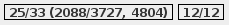
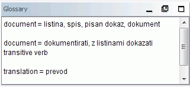
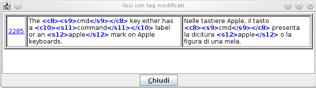

|
Finestra principale di OmegaT |
contiene il menu principale, la barra di stato e tre finestre: |
|
--- finestra dell'Editor |
in cui scrivere e modificare la traduzione |
|
--- finestra Corrispondenze parziali |
contenente i segmenti più simili ricavati dalle memorie di traduzione |
|
--- finestra Glossario |
contenente la traduzione della terminologia |
|
Finestra dei file del progetto |
|
|
|
|
|
|
|
Per modificare le impostazioni di OmegaT e del progetto si utilizzeranno le finestre di dialogo seguenti. Tutte queste finestre vengono descritte in sezioni separate e qui sotto viene solo accennato come utilizzarle e come richiamarle a video:
|
|
|
|
|
|
|
|
|
|
La finestra principale di OmegaT è composta da varie finestre, dalla barra dei menu e dalla barra di stato. Si può intervenire sulla posizione e dimensione di ogni finestra e sbloccarla in modo da poterla riposizionare trascinando con il mouse la sua barra del titolo. In base al suo stato, in corrispondenza dell'angolo superiore destro di ogni finestra possono comparire diversi indicatori.
 riduce la finestra in modo che nella parte inferiore della schermata principale, vicino alla barra di stato, venga riportata solo la sua barra del titolo.
riduce la finestra in modo che nella parte inferiore della schermata principale, vicino alla barra di stato, venga riportata solo la sua barra del titolo.
 ingrandisce la finestra a pieno schermo.
ingrandisce la finestra a pieno schermo.
 riporta la finestra alla sua dimensione originaria dopo averla ridotta a icona o ingrandita a pieno schermo.
riporta la finestra alla sua dimensione originaria dopo averla ridotta a icona o ingrandita a pieno schermo.
 sblocca la finestra dalla disposizione della schermata principale per poterla gestire singolarmente come finestra mobile.
sblocca la finestra dalla disposizione della schermata principale per poterla gestire singolarmente come finestra mobile.
 riporta di nuovo la finestra all'interno della schermata principale.
riporta di nuovo la finestra all'interno della schermata principale.
È anche possibile disporre le varie finestre in modo che risultino sovrapposte. In questo caso, le finestre verranno associate a un indicatore di scheda. Facendo clic su tale indicatore si porterà la finestra in primo piano. I separatori che suddividono le finestre della schermata principale possono essere spostati per ridimensionare le singole finestre.
I contatori nell'angolo inferiore destro della finestra tengono traccia dell'avanzamento della traduzione:

| 31/34 | numero di segmenti - tradotti / totali, per il file attivo |
| 2530/2605 | numero di segmenti univoci - tradotti / totali nel progetto |
| 3196 | numero totale di segmenti (incluse le ripetizioni) nel progetto |
| 39/53 | numero di caratteri nel segmento di origine e in quello tradotto, rispettivamente |
Si tratta dell'area principale nella quale viene eseguita, o modificata, la traduzione. La finestra dell'Editor visualizza il testo del documento parzialmente tradotto: il testo già tradotto viene visualizzato nella lingua di arrivo, mentre il testo non ancora tradotto viene visualizzato nella lingua di partenza originaria. Il testo visualizzato è suddiviso in segmenti e ogni singolo segmento potrà essere modificato facendo doppio clic al suo interno. Nel caso sopraccitato, i segmenti già tradotti non vengono esplicitamente contrassegnati: si può comunque modificare l'impostazione, affinché si adatti meglio alle proprie necessità. Per esempio, contrassegnandoli in giallo (si veda il menu Vista).
Uno dei segmenti è quello attivo. Il segmento sul quale si deve operare è suddiviso in due parti; la parte superiore riporta, in neretto ed evidenziato in verde, il testo di partenza (il testo da tradurre), mentre la parte inferiore corrisponde al “campo di modifica” (ovvero dove si dovrà scrivere, o modificare, la traduzione) racchiuso tra due marcatori: a sinistra <segmento nnnn>, dove nnnn corrisponde al numero del segmento attivo, e a destra <fine segmento>. La parte superiore del segmento viene utilizzata come riferimento del testo da tradurre, mentre la parte inferiore (il “campo di modifica”) è quella dove viene scritta, o modificata, la traduzione.
A seconda dell'impostazione del Comportamento di modifica, il campo di modifica del segmento da tradurre può risultare vuoto oppure contenere il testo di partenza o la traduzione della stringa più simile a quella che ci si accinge a tradurre. Quando ci si sposta a un altro segmento, la traduzione verrà confermata e memorizzata. Se si desidera che il segmento rimanga nella sua versione originaria (non tradotto), sarà sufficiente svuotare il campo di modifica, rimuovendo tutto il testo (selezionare il contenuto del campo di modifica con Ctrl+A e, quindi, eliminarlo con Canc). OmegaT è in grado di ricordare una traduzione quando il segmento originario è identico a uno già tradotto. Si tratta di una funzione particolarmente utile quando i documenti contengono marchi di fabbrica, nomi o altri nomi propri, oppure parti che devono rimanere nella loro lingua originaria e non richiedono, quindi, traduzione.
Per ulteriori informazioni si veda Modifica della traduzione.

Quando ci si sposta a un segmento successivo, nella finestra “Corrispondenze parziali (fuzzy)” verrà automaticamente selezionata la prima corrispondenza parziale (ovvero quella con la percentuale di concordanza più alta). La corrispondenza parziale selezionata sarà evidenziata grassetto, le parole che non appaiono che si sta traducendo saranno segnalate in blu e quelle adiacenti alle parti mancanti in verde. Si può selezionare un'altra corrispondenza tramite la combinazione di tasti Ctrl+2, 3, 4 o 5. Se non dovesse esistere una corrispondenza #5, naturalmente la combinazione Ctrl+5 non sortirebbe alcun effetto. Per utilizzare nella traduzione la corrispondenza selezionata, premere Ctrl+R per sovrascrivere completamente il contenuto del “campo di modifica”, oppure Ctrl+I per inserire il testo della concordanza in corrispondenza della posizione del cursore.
La percentuale di concordanza - ad es., la misura della differenza tra il segmento di origine e le corrispondenze individuate - è equivalente approssimativamente al numero delle parole comuni nel segmento di origine e in quello concordante, diviso per il numero delle parole contenute nel più lungo dei due. Se dovesse essere utilizzato il plugin tokenizer, le parole contenute nei due segmenti saranno prima ridotte ai loro temi. In alternativa, le parole vengono lasciate inalterate, mentre la punteggiatura, i numeri e i tag sono ignorati. Per finire, possono essere inclusi nel calcolo le differenze nei tag, nei numeri e nella punteggiatura (che sono stati ignorati nei primi due casi). La finestra delle corrispondenze mostra le eventuali tre misure nel modo seguente:
<% di concordanza, quando viene utilizzato il tokenizer / % per la concordanza di OmegaT predefinita / % di concordanza con tag, numeri, inclusa la punteggiatura>Nell'esempio sopra, le prime due misure (45/20) sono differenti poiché è stato usato il tokenizer. La terza percentuale (56) è più alta a causa delle differenze nella punteggiatura e nei tag utilizzati.
Se non viene visualizzato alcun nome file, l'origine è la memoria di traduzione predefinita del progetto. Le stringhe orfane (la concordanza #1) contrassegnano i segmenti nella memoria di di traduzione predefinita del progetto, senza avere corrispondenze nel testo dei file di origine. Nell'esempio mostrato sopra, la frase originale è stata già tradotta con OmegaT.
La finestra del Glossario consente di accedere alle raccolte personali di espressioni e voci terminologiche, radunate nei file di glossario. Vengono riportate le traduzioni di termini reperiti all'interno del segmento attivo, ma la loro visualizzazione ha solo scopo di riferimento, in quanto non è possibile inserirli automaticamente all'interno del segmento in corso di traduzione.
Il segmento di origine nell'esempio mostrato sopra era “The mayor cerebral lobes, brain stem, cerebellum, cerebellar tonsils, and spinal cord were studied.”, per il quale state reperite sei definizioni di termini all'interno del file di glossario. OmegaT è in grado anche di gestire termini multipli, ma questa è una funzione molto basilare: se all'interno del segmento in corso di traduzione vengono reperite due traduzioni per lo stesso termine, verrà visualizzato il termine originario.
I Dizionari sono la versione elettronica dei formati cartacei dei vocabolari MerriamWebsters, Duden, Larousse, ecc., presenti nelle scrivanie di qualsiasi traduttore.
Se viene attivato nel Menu → Opzioni, nella finestra di Google Translate si potrà ottenere la traduzione Google Translate del segmento attivo, che potrà essere inserita all'interno dell'area di modifica del segmento.
Ovviamente, per accedere alle varie funzioni di OmegaT ci si potrà basare sulla barra dei menu. Per una descrizione completa di tutte le voci di menu e dei corrispondenti comandi si faccia riferimento all'appendice Barra dei menu. Tuttavia, le funzioni più comunemente utilizzate sono attivabili anche con scorciatoie da tastiera; pertanto, dopo averli imparati, non sarà più necessario accedere alla barra dei menu per attivarne la funzione corrispondente.
La barra di stato è destinata a contenere i messaggi relativi al flusso di lavoro e si trova nella parte inferiore della schermata principale. Questa barra comunica all'utente quali sono le operazioni specifiche in corso di esecuzione. Riporta anche il numero delle corrispondenze parziali e di glossario rilevate per il segmento attivo.
La finestra “File del progetto” visualizza l'elenco dei file del progetto, con indicazione di altre informazioni relative al progetto stesso. Questa finestra viene aperta automaticamente ogni volta che OmegaT carica un progetto. Per chiuderla usare il tasto esc, per aprirla o richiamarla in primo piano usare Ctrl+L.
Vengono visualizzate le seguenti informazioni.
l'elenco di tutti i file da tradurre che compongono il progetto. Si tratta dei file contenuti nella cartella dei file di partenza che OmegaT sarà in grado di gestire. Quando si fa clic su uno dei file, questo verrà aperto e su di esso si potrà immediatamente iniziare a lavorare.
il file attivo disponibile nella finestra dell'Editor viene evidenziato con uno sfondo azzurro
accanto al del nome del file viene riportato il numero dei segmenti in esso contenuti.
il numero dei segmenti univoci contenuti all'interno del progetto.
il numero dei segmenti univoci che sono già stati tradotti. Questo valore viene aggiornato ogni volta che si conclude la traduzione di un segmento.
La serie dei segmenti univoci viene calcolata prendendo in esame tutti i segmenti del progetto e sottraendo i segmenti duplicati, in base alla presenza di maiuscole o minuscole (“Oggetto” e “oggetto” sono considerati due segmenti diversi).
La differenza fra il “Numero dei segmenti” e il “Numero dei segmenti univoci” potrà fornire un quadro approssimativo del numero delle ripetizioni contenute nel testo. Si noti, comunque, che i numeri non indicano quanto importanti siano le ripetizioni: queste possono corrispondere a frasi relativamente lunghe che vengono ripetute per più volte (in questo caso si è molto fortunati), oppure possono descrivere una tabella di parole chiave (e allora non si è poi così fortunati...). Il file project_stats.txt presente nella cartella /omegat del progetto contiene informazioni più dettagliate sui segmenti, per ciascun file del progetto.
Intervenendo sulle regole di segmentazione si potrà modificare il numero dei segmenti/segmenti diversi di un progetto. Questa procedura dovrebbe, però, essere evitata in qualunque modo, dopo aver iniziato la traduzione di un progetto. Per ulteriori informazioni si veda quanto riportato nelle regole di segmentazione.
Facendo clic sul pulsante “Importa i file di partenza...” si ha la possibilità di aggiungere nuovi file al progetto. Il comando copia i file selezionati nella cartella /source e ricarica il progetto per caricare i nuovi file. Facendo clic sul pulsante "Importa da MediaWiki" e indicando l'URl corrispondente, si ha la possibilità di aggiungere pagine internet scritte in formato MediaWiki.
La finestra di ricerca testo viene utilizzata per trovare segmenti specifici all'interno di un progetto. Si potranno aprire simultaneamente più finestre di ricerca. Per aprire una nuova finestra di ricerca, dalla schermata principale utilizzare la combinazione rapida da tastiera Ctrl+F. La finestra di ricerca è formata da un campo di immissione testo, in cui le porzioni di testo da ricercare, da caselle di scelta e pulsanti, che consentono di impostare la ricerca, e da un'area per la visualizzazione dei risultati trovati.
Le ricerche sono eseguite sia sul testo di partenza sia su quello tradotto. Si ha anche la possibilità di avviare una ricerca all'interno di una qualsiasi cartella, ma si tenga presente che OmegaT può effettuare la ricerca solo all'interno dei file supportati.
Le ricerche sono in grado di riconoscere sia i caratteri jolly * e ?, sia le espressioni regolari.
La pressione del pulsante “Cerca”, dopo aver immesso una stringa nel campo del testo da trovare, genererà la visualizzazione di tutti i segmenti del progetto contenenti la stringa di ricerca.
Dato che OmegaT gestisce i segmenti identici come una entità, viene mostrato solo il primo segmento univoco. Attivare la casella "Mostra tutti i risultati" per visualizzare tutte le ricorrenze dei segmenti uguali. I segmenti appariranno in ordine di comparsa all'interno del progetto. I segmenti tradotti saranno visualizzati con sopra il testo originale e sotto quello tradotto; per i segmenti non tradotti verrà, invece, visualizzato solo il testo originale.
Se si fa clic su un segmento il programma si sposta nella finestra dell'Editor, dove sarà possibile modificarlo. A questo punto si può tornare alla finestra “Ricerca testo” e passare al successivo segmento estratto per apportare, anche a questo, le opportune modifiche. Si tratta di una condizione che risulta particolarmente utile quando si devono apportare modifiche terminologiche.
La finestra per la convalida dei tag individua ed elenca gli errori di formattazione nella traduzione. Per aprire la finestra si può utilizzare la combinazione di tasti Ctrl+T. La finestra mostra una tabella a tre colonne con un collegamento al segmento e ai suoi contenuti partenza e di arrivo:

I tag sono evidenziati in grassetto azzurro per un confronto migliore tra il contenuto originale e quello tradotto. Fare clic sul collegamento per passare al segmento all'interno della finestra dell'editor. Correggere l'errore, se necessario, e premere Ctrl+T per tornare alla finestra di convalida e correggere gli altri errori. Nel caso di cui alla figura, il testo di origine presenta una parola e dei tag in più, I tag sono compresi tra i segni <> ed evidenziati in blu.
Gli errori sui tag nella traduzione sono errori durante la loro manipolazione, che non ha riprodotto il loro stesso numero e ordine del segmento originale. Certe elaborazioni sono necessarie e non creano problemi, altre ne possono causare al momento della creazione del documento di arrivo. I tag, di solito, rappresentano elementi di formattazione presenti nel testo originale. La semplicità della formattazione del testo originale contribuisce in modo sostanziale alla riduzione del numero dei tag.
Il sistema di guida (che contiene questo manuale) può essere richiamato premendo F1, oppure avviando il comando Aiuto -> Manuale dell'Utente... della barra dei menu.
La finestra che viene aperta contiene il manuale e due pulsanti: Indietro e Sommario. Il manuale dell'Utente è un documento HTML contenente i collegamenti ai vari capitoli. Quando si fa clic su un collegamento, proprio come si farebbe all'interno di una comune pagina Web, si accederà direttamente alla prima pagina del capitolo.
Il manuale per l'utente è contenuto nella sottocartella docs della cartella di installazione di OmegaT e, pertanto, si potrà anche consultare, per esempio, la documentazione in inglese aprendo nel proprio navigatore web il file docs/en/index.html. In questo modo si sarà in grado di accedere anche ai collegamenti esterni in quanto il navigatore interno integrato in OmegaT non è in grado di gestire i link esterni di Internet.
| Avvertenze legali | Pagina iniziale | Indice |